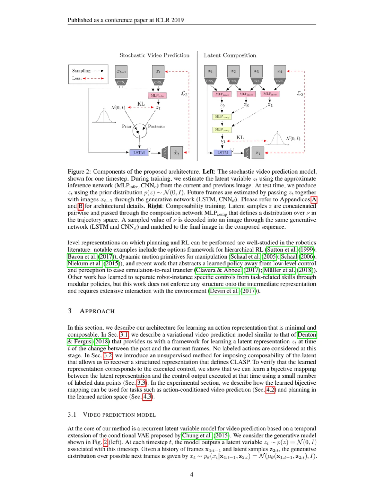
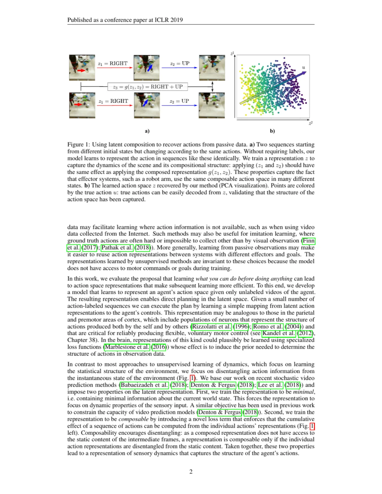
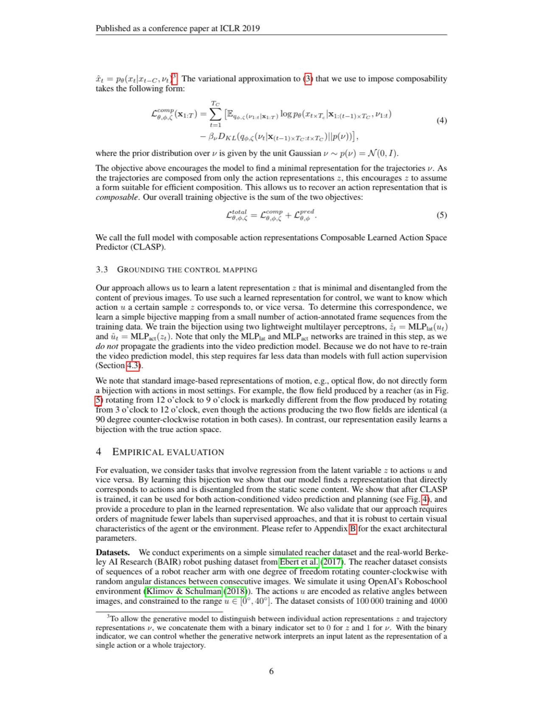
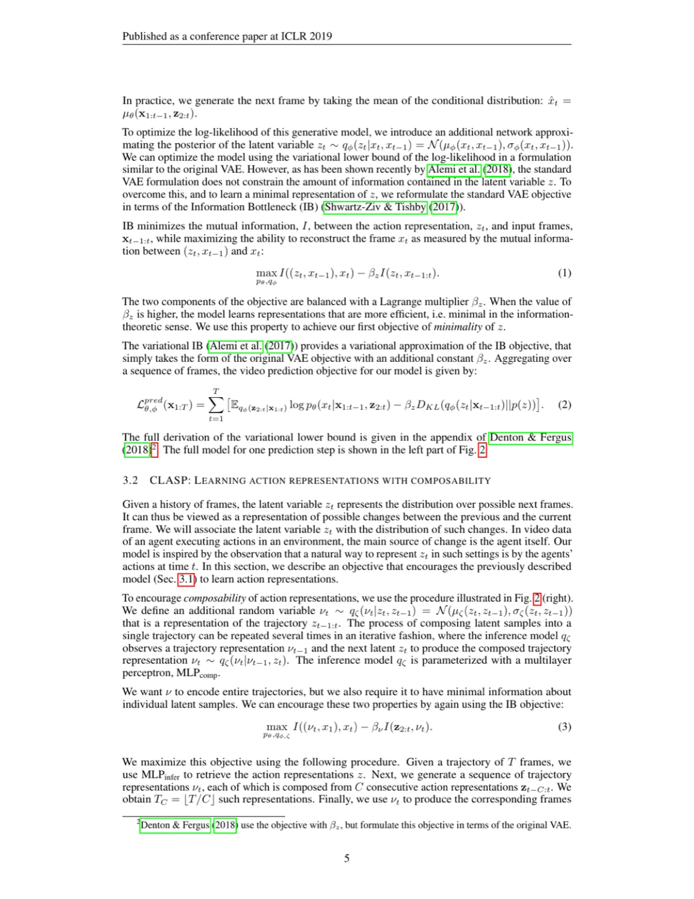

CLASP（Composable Learned Action Space Predictor）利用随机视频预测在无任何动作标注的情况下，从视频中学习智能体的隐空间动作表征。该表征同时满足 minimality（最小性）和 composability（可组合性），仅需极少量带标注数据即可用于动作条件视频预测与视觉规划，效果媲美全监督方法。
智能体在真实世界中行动时需要通过感知来判断自己可以做什么、以及这些动作会带来什么后果。现有的强化学习方法需要主动交互才能获取动作空间信息，而这在很多场景下代价高昂甚至不可行（例如使用互联网视频进行模仿学习）。
"Intelligent agents can learn to represent the action spaces of other agents simply by observing them act. Such representations help agents quickly learn to predict the effects of their own actions on the environment and to plan complex action sequences."
作者受婴儿学步的启发：婴儿在能够自主行走之前，已通过大量被动感知成年人行走积累了动作空间的先验知识。类比地，本文提出：纯从被动视频观察中学习动作表征，可以让后续学习更加高效——无论是动作条件视频预测还是规划任务，都只需极少量标注数据。

CLASP 在随机视频预测模型的隐变量上施加两个关键约束：minimality（最小性）与 composability（可组合性），从而迫使隐变量聚焦于动作相关的动态信息，同时与静态场景内容解耦。

为使 z 仅捕捉动态信息而尽量丢弃静态内容，作者采用 variational Information Bottleneck (VIB) 目标函数：
max I((zt, xt−1), xt) − βz I(zt, xt−1:t)
视频预测目标为标准 VAE 损失加权版本（β-VAE 风格）：最大化重建质量的同时，最小化 z 与输入帧之间的互信息。βz 越大，z 的信息量越少，越趋于"最小化"。
为学到可组合的动作表征，CLASP 引入轨迹随机变量 ν，它由若干连续的 z 组合而得（通过 MLPcomp）。同样用 IB 目标训练：ν 应足以预测对应的末帧图像，同时对单个 z 的信息量最小化。总目标为两个 loss 之和：
Ltotal = Lcomp + Lpred
可组合性隐式地促进了解耦：因为 ν 无法看到中间帧的静态内容，仅当每个 z 已与静态内容解耦时，组合才得以高效进行。
训练完视频预测模型后，只需少量带动作标注序列（如 100~10000 条）训练两个轻量 MLP（MLPlat 和 MLPact），即可在 z 与真实控制指令 u 之间建立可逆的双射映射。这一步不反向传播至视频预测模型，数据量需求极低。
实验在两个数据集上进行：（1）reacher 数据集——模拟单自由度旋转机械臂（OpenAI Roboschool），包含 100,000 训练序列、4,000 测试序列；（2）BAIR robot pushing 数据集（Ebert et al. 2017）——44,374 训练序列，真实世界机械臂推物。基线包括 Denton & Fergus (2018)（无 composability 目标），以及完全监督方法 Oh et al. (2015)（reacher）和 Finn & Levine (2017)（BAIR）。
| 方法 | Reacher 绝对角度误差 [deg] | BAIR 末端位置误差 [px] |
|---|---|---|
| 随机猜测 (Start State) | 90.1 ± 51.8 | 26.6 ± 21.5 |
| Denton & Fergus (2018) | 22.6 ± 17.7 | 3.6 ± 4.0 |
| CLASP（本文） | 2.9 ± 2.1 | 3.0 ± 2.1 |
| Supervised（全监督上界） | 2.6 ± 1.8 | 2.0 ± 1.3 |
CLASP 在 reacher 上达到与全监督方法几乎相同的性能，而 baseline 性能接近随机。在 BAIR 上，CLASP 较 baseline 将与监督方法的差距缩小约 30%。
| 方法 | Reacher 终点距离 [deg] |
|---|---|
| Start Position | 97.8 ± 23.7 |
| Random | 27.0 ± 26.8 |
| Denton & Fergus (2018) | 14.1 ± 10.7 |
| CLASP（本文） | 1.6 ± 1.0 |
| Agrawal et al. (2016)（全监督） | 2.0 ± 1.5 |
| Oh et al. (2015)（全监督） | 1.8 ± 1.5 |
| CLASP（变化背景） | 3.0 ± 2.2 |
| CLASP（变化机器人外形） | 2.8 ± 2.9 |
规划算法采用 Model Predictive Control (MPC) + Cross Entropy Method (CEM)，在隐空间 z 中规划轨迹，用 VGG16 余弦距离衡量与目标帧的差异。CLASP 在视觉伺服上超越全监督方法，达到最优性能。


CLASP 用无标注数据预训练后，仅需 100~1000 条带动作标注序列即可达到与 10,000 条全监督数据相当的规划精度。在变化背景（CIFAR-10 随机图像）和变化机器人外形（72 种宽度×长度组合）条件下，CLASP 性能基本保持不变，说明学到的表征对视觉特征变化具有鲁棒性。
所有实验使用 64×64 像素图像，隐变量维度 dim(z) = dim(ν) = 10，模拟的 reacher 仅有一个自由度。方法在更复杂的操作场景（多自由度、高分辨率、遮挡）下的泛化性尚未验证。
论文在 BAIR 末端位置误差上：CLASP 为 3.0 ± 2.1 px，全监督方法为 2.0 ± 1.3 px。作者承认："our model performs better than the baseline … reducing the difference … by 30 %"，但并未完全闭合差距，并指出 baseline 仍产生模糊与鬼影伪影。
CLASP 依赖"视频中变化最大来源是智能体自身动作"的假设。若场景中有大量无关运动（行人、风吹树叶等），隐变量可能无法有效分离动作信息，使 composability 损失失效。
论文指出："the problem of determining β is not unique to this work and occurs in all stochastic video prediction methods, as well as VIB and β-VAE"。βz 和 βν 需设为"样本仍能生成高质量图像的最大值"，缺乏自动化准则。